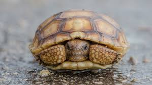

DESERT TORTOISE FACTS

Physical Traits
Hard domed shell
Short sturdy legs
Brown or tan color
Habitat
Deserts of North America
Dry, sandy areas
Lives in burrows

Diet
Eats grasses and plants
Gets water from food
Stores water in body
Slow-moving reptile adapted to dry desert life

Hard domed shell
Short sturdy legs
Brown or tan color
Deserts of North America
Dry, sandy areas
Lives in burrows
Eats grasses and plants
Gets water from food
Stores water in body
Can live over 50 years in the wild.
Spends most time underground to stay cool.